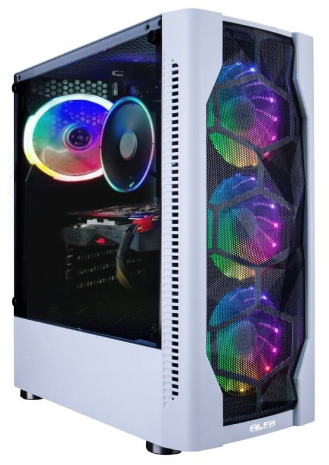

Компьютер BrandStar Настольный компьютер BrandStar P5159044. Intel Core i3-10100. Intel H410 mATX. DDR4 8GB PC-21300 2666MHz. 120GB SSD + 1TB. Встроенная. Без привода. Sound HDA 7.1. Aerocool Cylon ATX. 450W. Без операционной системы

- цвет товара: чёрный
- линейка процессора: Intel Core i3
- количество ядер процессора 4
- частота процессора 3600 МГц
- тип видеокарты: встроенная
- конфигурация накопителей: HDD+SSD
- общий объем накопителей HDD: 1 ТБ
- общий объем накопителей SSD: 120 ГБ
- типоразмер корпуса: Midi-Tower
- операционная система: ОС не установлена
Описание товара:
Подробное описание
Процессор: Intel Core i3-10100. Материнская плата: Intel H410 mATX. Оперативная память: DDR4 8GB PC-21300 2666MHz. Жёсткий диск: 120GB SSD + 1TB. Видеокарта: Встроенная. Оптический привод: Без привода. Звуковая система: Sound HDA 7.1. Корпус: Aerocool Cylon ATX. Блок питания: 450W. Операционная система: Без операционной системы.
Характеристики
- Цвет--> товара чёрный
- Тип--> рабочая станция
- Типоразмер корпуса--> Midi-Tower
- Оптический привод--> нет
- Операционная система--> ОС не установлена
- Процессор--> Intel Core i3 10100
- Частота процессора--> 3600 МГц
- Количество ядер процессора--> 4
- Размер оперативной памяти--> 8
- Тип памяти--> DDR4
| Количесвто фпс в играх | |
|---|---|
| cs go | 300 fps |
| gta 5 | 260 fps |
| dota 2 | 270 fps |
| Ведьмак | 200 fps |